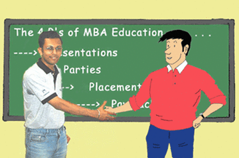

Shubham Choudhury is a Computer Science Engineer and an MBA from NITIE, Mumbai. He is currently working with Infosys Technologies Ltd. and based in Hyderabad. He spent his childhood days in Bilaspur, Chattisgarh and obtained B.E. in Computer Science from BIT, Durg, where he was a Gold Medalist. In order to pursue a career in Systems Management, he joined the MBA programme in NITIE. Following his keen interest in IT, he worked in the organizing team of MastishK 2004- India’s 1st Fully Online Management Games Event. It was during the planning phase of the event, that Arbit Choudhury was born.
Shubham’s interests include cricket, sketching, writing. Apart from all this, he is known to be a great punster in his friend circle. It is this ability of being able to generate humour from real life situations, coupled with his interest in sketching, which resulted in him being given the responsibility to create the 1st ever B-school comic character, by Team MastishK.
Contact
details-
shubham.choudhury@gmail.com
shubham19@yahoo.com
GTalk: shubham.choudhury
Yahoo! IM: shubham19